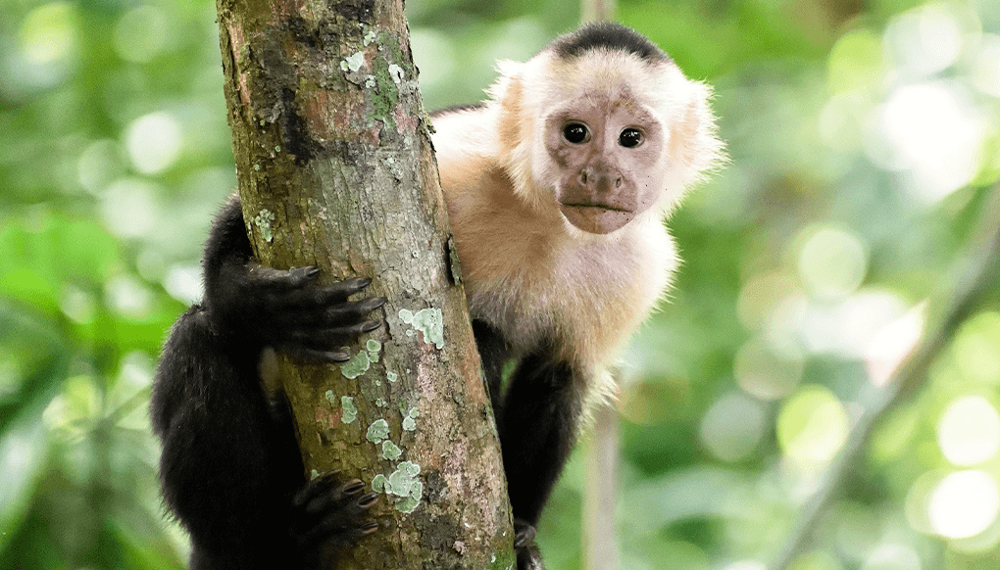

Bears
- Ollie
- Mona
There are eight bear species in the world. They can be as small as four feet long and about 60 pounds to as big as eight feet long and more than a thousand pounds.
More About BearsGiraffes

- Frankie
- Coconut
Giraffes are the tallest mammals in the world. They are categorized into four distinct species: northern giraffe, southern giraffe, Masai giraffe and reticulated giraffe.
More About GiraffesLions

- Mella
- Karl
The lion is a large cat of the genus Panthera. It has a muscular, broad-chested body; short, rounded head; round ears; and a hairy tuft at the end of its tail.
More About LionsMonkeys
- Cookie
- Earl
- Banana Pudding
A monkey is a primate of the Haplorrhini suborder and simian infraorde.
More About MonkeysAlligators
- Wren
- Aspen
- Mika
An alligators is a large reptile in the Crocodilia order in the genus Alligator of the family. Alligators have a long, rounded snout that has upward facing nostrils at the end.
More About Alligators